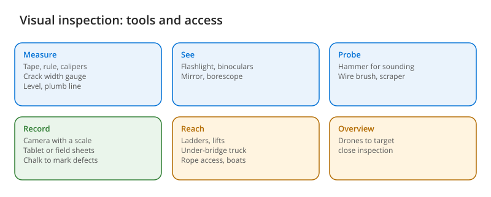

Visual inspection and access
In one sentence: visual inspection finds most problems, as long as it's systematic, close enough to see, and backed by measurements and photos someone else can follow.

Being systematic
- Follow a fixed order: span by span, element by element, the same direction each time.
- Use a defect numbering system tied to drawings or a grid.
- Compare every finding with the previous report: new, same, worse.
The basic kit
- Measuring: tape, folding rule, crack width gauge or comparator card, calipers, level, plumb line.
- Seeing: flashlight, binoculars, mirror, borescope for cavities and boxes.
- Probing: hammer for sounding concrete and checking bolts, scraper and wire brush to clean steel, pick.
- Recording: camera with a scale or ruler in the frame, tablet or field sheets, chalk or crayon to mark defects.
Getting close enough
| Method | Good for |
|---|---|
| Ladders | Low members, short spans |
| Lifts (boom, scissor) | Undersides of short and medium bridges, building façades |
| Under-bridge inspection truck | Undersides reached from the deck, with traffic control |
| Rope access | Tall piers, cable stays, places a vehicle can't reach |
| Boats and divers | Piers and foundations in water |
| Drones | Overall views and hard-to-reach surfaces; they find areas to inspect closely, not replace hands-on work |
| Confined space entry | Box girders, culverts, vaults, with gas monitoring and a permit |
Recording what you see
For every defect: location, type, size (length, width, area, depth), condition state and a photo. A photo without a location and a scale is of little use next time.
Safety
Fall protection, traffic control, confined space procedures and working over water each need their own plan. On a bridge, the inspector's biggest risk is usually the traffic.
Common mistakes
- Inspecting from the ground what the scope says must be inspected hands-on.
- Photos without a scale or location.
- Rushing the underside because the access window is short.